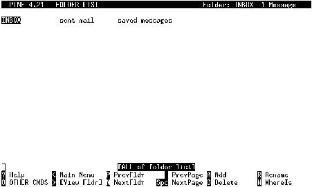

Next: Leyendo y enviando correo
Up: Pine
Previous: Configuración básica
Índice General
El uso de carpetas se hace evidentemente necesario cuando uno comienza
a recibir grandes cantidades de correo. Hemos hablado ya del
correo SPAM, y por mas que tengamos cuidado en no dejar en
muchos lugares nuestra dirección electrónica, tarde o temprano caerá
en manos de un empresario inescrupuloso que la utilizará para enviar
su molesta publicidad. Es una actitud un tanto pesimista, pero es lo
que la experiencia a través de los años ha demostrado en mas de una
ocasión.
Tarde o temprano recibiremos cientos de mensajes diarios, y gran parte
de ellos serán de SPAM, cómo evitar desesperarse con tanta cantidad
de mensajes, si los interesantes sólo son algunos pocos?. La respuesta
está en el filtrado de mensajes, y la división de los mismos en
carpetas; el filtrado es algo que se explicará mas adelante, por ahora
nos abocaremos a la tarea de crear carpetas.
Figura 3.3:
Lista de carpetas del pine
|

|
En la figura 3.3 se puede
ver la lista de carpetas por defecto que existe cuando el
pine es recién iniciado. Estas carpetas en realidad son
archivos que se encuentran almacenados en el directorio personal de
cada usuario, dentro del subdirectorio mail/3.5.
De las funciones del menú, se tienen 3 que sirven para administrar las
carpetas: Add, Delete y Rename. Está de
mas explicar para que sirven.
Con las flechas del teclado se puede ir seleccionando una u otra
carpeta, y pulsando  entraremos al índice de mensajes de
la carpeta seleccionada.
entraremos al índice de mensajes de
la carpeta seleccionada.
Vale la pena nombrar la funcionalidad de las tres carpetas por defecto
que el pine crea al inicio:
- INBOX
- En esta carpeta se irán almacenando los mensajes que
lleguen, el alumno verá mas adelante que mediante el uso de
filtrado, se podrá seleccionar la carpeta donde se guardan mensajes
espcíficos.
- sent-mail
- Esta carpeta almacena los mensajes enviados por el
usuario. Es útil a la hora de necesitar reenviar algún mensaje que
por una u otra razón no ha llegado a destino.
- saved-messages
- Como ya se verá, los mensajes pueden ser movidos
de carpeta en carpeta, la carpeta por defecto a donde son movidos
los mensajes es ésta. Generalmente la carpeta INBOX
contiene aquellos mensajes nuevos que van llegando, el usuario
entonces los va leyendo, respondiendo y si cree conveniente, los
guarda para un futuro, de lo contrario, los elimina; la carpeta
saved-messages es para esto.
Next: Leyendo y enviando correo
Up: Pine
Previous: Configuración básica
Índice General
Proyecto Cursos - LuCAS - http://lucas.hispalinux.es/htmls/cursos.html